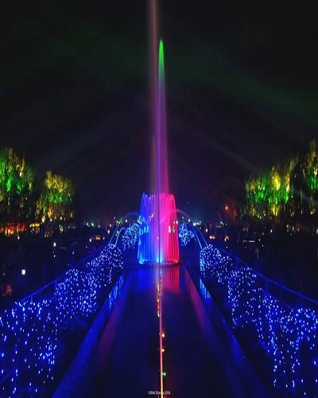
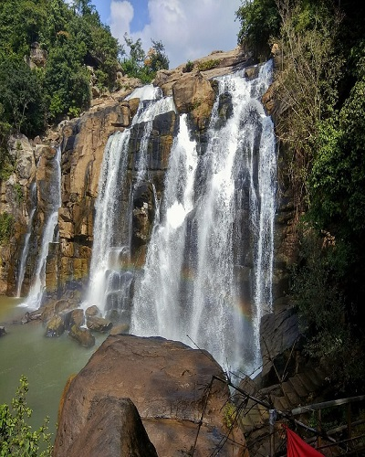
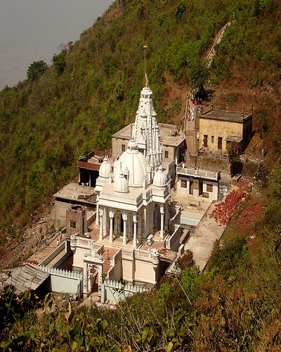

The best season to visit Hazaribagh is the winter season. The temperature remains comfortable and is apt for sightseeing. The best months to visit are October, November, December, January and March. December to February is the winter season in Hazaribagh with an average temperature around 15°C.Read More
Hazaribagh

Jamshedpur
November to February are the best months to visit Jamshedpur. The weather is pleasant and favourable.Read More
Jamshedpur
Massanjore Dam
Best time to visit is around sunrise and sunset for an awesome breathtaking experience.Read More
Massanjore Dam
Netarhat
The best time to visit Netarhat is during the spring and early summer months. Read More
Netarhat

Ranchi
The best season to visit Ranchi is the winter season. In this season, the temperature remains comfortable and is apt for sightseeing and other pursuits. The best months to visit Ranchi are September, October, November, December, January, February, March, April and May.Read More
Ranchi

Shikharji
Shikharji is a difficult pilgrimage. It's best to start by 2:30-3:00 am so that you can't see the ascend and cover most of the 1st 9 kms before sunrise.Read More